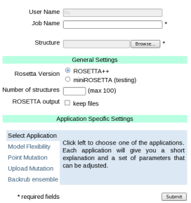
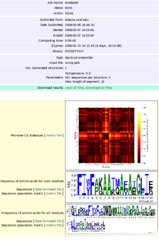

This server is a frontend for Rosetta, a software that focuses on the prediction and design of protein structures, protein folding mechanisms, and protein-protein interactions. We provide access to different applications in protein design that utilize backrub, a method for modeling of backbone flexibility [Smith and Kortemme, 2008]. There are four applications implemented at this time:
|
To submit a new job log in and click on Submit in the second row of the menu at the top of the site. This opens the submission form, which is divided in three parts. Top Enter a name for your job that helps you finding it later and the structure that you want to model. Middle - General Settings Choose the version of Rosetta, the number of structures and whether the raw output should be stored or not. Bottom - Application Specific Settings Choose the application you want to use and enter the application specific parameters. An explanation of each parameter is shown when hovering the mouse over its name. Once your done click the 'Sumbit' button on the bottom left. If a value is missing a popup window will notify you. |  |
|  |
Depending on the status not all of the information described below is shown. Simulation data
Files can be viewed individually or can be downloaded as a zip archive. Results For certain applications an analysis of the raw output is automatically carried out. For these cases the results are visualized here. All the files shown are also included in the zip archive. |
The number of individual simulations that are carried out.
This option allows the user to keep the raw Rosetta output as well as the resfile. Otherwise only the resulting pdb structures will be provided for download.
User data must have the following formats.Please follow these formats and check your input before submitting to the server to avoid errors and wasting processor time.
Multi-chain protein complex using RCSB's PDB File Format.
If you submit a job that is using mini and it finishes with an "Rosetta Error", please make sure that the residue-ID's in the PDB-file are <1000.
If this file is not given backrub is applied to all residues. This file contains a list of mutations to be made and residues that should be subject to the backrub move of a PDB Complex. If the residue is not given in this file it will be fixed.
4 space delimited columns representing:
| 0. | no backrub, no mutation | A 111 F | default |
| 1. | backrub w mutation | A 111 B AFI | |
| 2. | backrub w/o mutation | A 111 B | |
| 3. | mutation w/o backrub | A 111 F AFI |
A 10 B A 11 B A 12 B A 13 B A 14 B AFI A 20 B A 21 B A 22 B A 23 B A 24 B A 31 F AFI
Residues 10 to 14 and 20 to 24 are subject to the backbone move. For residues 14 and 31 a mutation with either Alanine (A), Phenylalanine (F) or Isoleucine (I) is allowed. Rosetta is going to pick the energetically most favorable amino acid for this position. For residue 31 the backrub move is not allowed.
The Rosetta software focuses on the prediction and design of protein structures, protein folding mechanisms, and protein-protein interactions. Rosetta codes consistently exhibit repeated success in the Critical Assessment of Techniques for Protein Structure Prediction (CASP) competition as well as the CAPRI competition. Rosetta codes also address aspects of protein design, docking and structure. The software is the foundation for the Human Proteome Folding Project on the World Community Grid.
ROSETTA++ is the software suite that implements the algorithms used in folding, design and interaction modeling. It is currently licensed for free to users at academic and nonprofit institutions. Over 2000 academic users in more than 32 countries use Rosetta. Commercial entities can use Rosetta by paying a license fee. Revenue from licensing is reinvested in supporting continued software development.
miniRosetta is the new version of Rosetta that is currently developed and will be officially released soon. It takes full advantage of C++ and it's concepts.
For more information on Backrub see [ Smith and Kortemme, 2008 ]